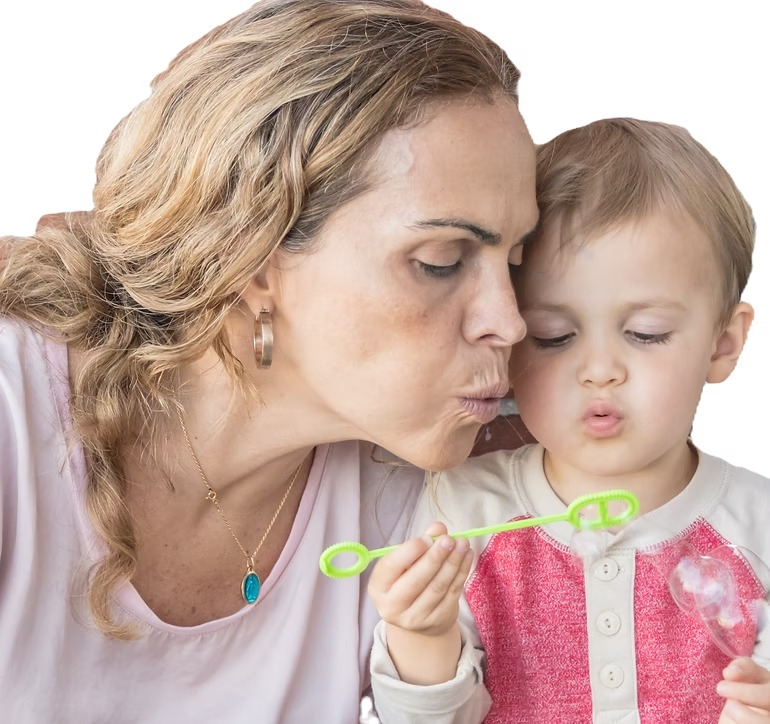
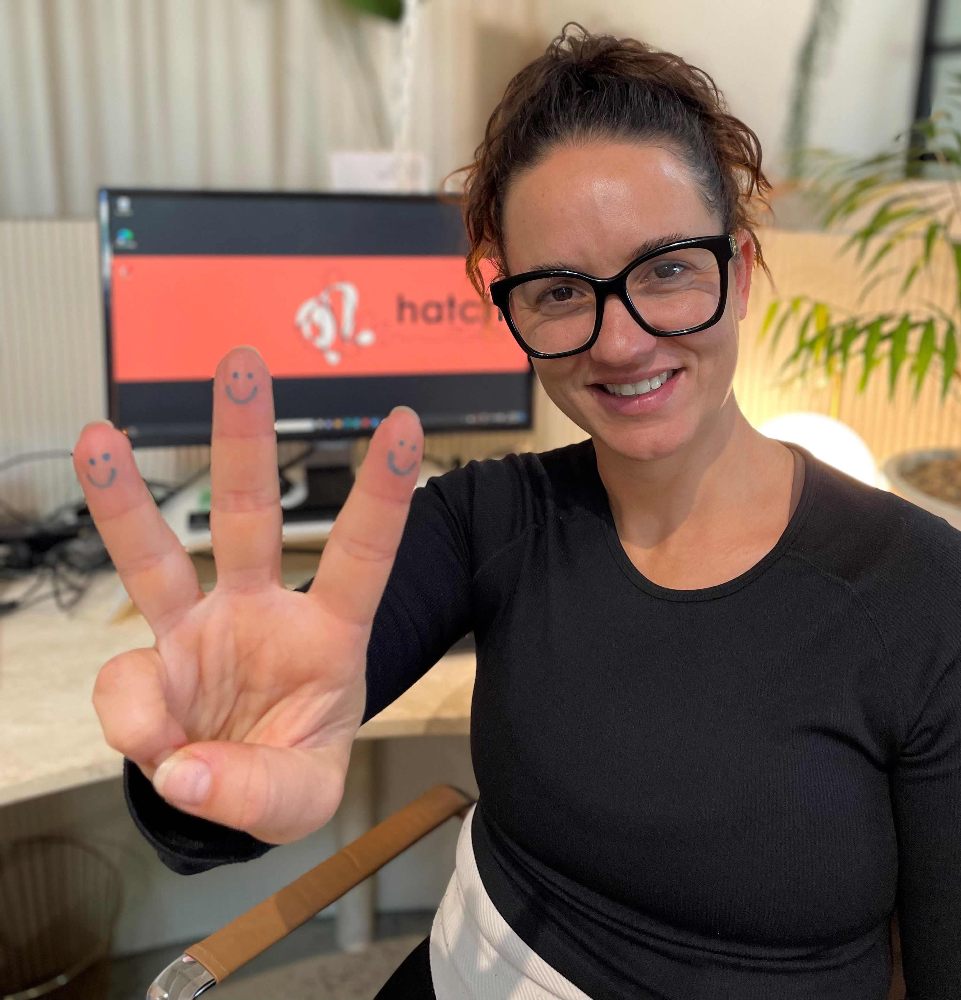

Care for the Carers who Care for the Kids.
Hatch is an independent community for NSW foster and kinship carers. Here you can connect with people who understand the role, find support, share what you know and help build a stronger collective voice.

Hear directly from the community.
Carers hold the day-to-day. They need somewhere to hold each other up.
Carer wellbeing is closely connected to child wellbeing. Carers who feel connected and supported are better placed to give children the stable, nurturing relationships they need — and the system on its own can't always give carers that connection.
Hatch was started by carers and sector professionals who saw that gap. We believe carers are central to change, so we begin with them. Our aim is for children in care to thrive, and we keep carers at the centre of our direct work.
Connect. Nurture. Empower.
Three things we build the community around, and what they look like in practice.
Connect
Meet carers who understand the role, and ask questions of people who've been there.
Nurture
Share the hard moments and get peer support, in a community looked after by volunteer carers.
Empower
Pass on what you know and add your experience to a clearer picture of what carers need.
A space that belongs to carers.
Hatch is independently governed: our mission and carers' needs set our direction, not any one funder or contract. We work constructively with government and services, and what you share inside the community is kept confidential to it.
Independently governed
Government and sector partners can support Hatch, but none of them control the community or what carers can say.
Carer-led, carer-facilitated
Shaped by people with lived experience, and moderated by volunteer carers with oversight from Hatch.
Constructive
Independent, but not adversarial. We aim to work alongside government and services, not instead of them.
When carers talk, everyone learns.
Carers come to Hatch to connect, ask questions and share what they know. Those conversations help other carers immediately. Over time, they also help us understand what carers need — so we can keep improving the support, the community and the knowledge Hatch provides back to them.
Carers connect & share
Community knowledge grows
Hatch learns & improves
Carers get better support
Some of what we learn helps beyond Hatch.
Hatch doesn't share individual conversations outward. What can travel is aggregated, anonymised patterns that recur across many carers — which may help government, NGOs and the wider sector understand what supports sustainable caring.
Trusted carer community
Recurring patterns, anonymised
Collective insight for the sector
Better-informed decisions for carers
Turning lived experience into practical insight.
An emerging body of work, still developing, that draws on aggregated and anonymised carer experience to help show what makes caring sustainable — and what doesn't.
Help strengthen the community around carers.
We aim to work with government, philanthropy and the corporate sector, and we're building the processes and relationships to do that well — without handing any partner control of the community.
Understand carer experience
Explore better conditions for sustainable care, informed by aggregated and anonymised carer experience.
Build independent infrastructure
Help fund the platform and community that support carers.
Support practical initiatives
Back research and resources that improve the everyday experience of NSW foster and kinship carers.
Carer leadership, sector depth, technology capability.

Have a question?
If you're a NSW foster or kinship carer ready to join, head to the application form. If you'd like to volunteer, collaborate or partner with us, send us an email.
Email support@hatchcarers.com.au